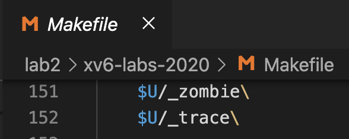
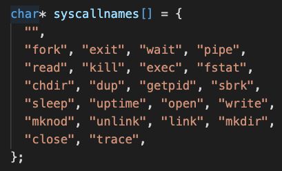

System calls [os lab2]
本文最后更新于：December 16, 2020 pm
system call的相关代码
user-space code: user/user.h , user/user.pl
kernel-space code: kernel/syscall.h , kernal/syscall.c
process-related code: kernel/proc.h , kernel/proc.c
先switch git branch到sycall
git fetch
git checkout syscall
make clean1. System call tracing
In this assignment you will add a system call tracing feature that may help you when debugging later labs. You’ll create a new trace system call that will control tracing. It should take one argument, an integer “mask”, whose bits specify which system calls to trace. For example, to trace the fork system call, a program calls trace(1 << SYS_fork), where SYS_fork is a syscall number from kernel/syscall.h. You have to modify the xv6 kernel to print out a line when each system call is about to return, if the system call’s number is set in the mask. The line should contain the process id, the name of the system call and the return value; you don’t need to print the system call arguments. The trace system call should enable tracing for the process that calls it and any children that it subsequently forks, but should not affect other processes.
这个任务会增加一个system call tracing的feature。我们需要创建一个新的system call trace 来控制tracing。他需要接收一个参数，一个整数”mask”，代表了需要trace的system calls。
Example:
$ trace 32 grep hello README
3: syscall read -> 1023
3: syscall read -> 966
3: syscall read -> 70
3: syscall read -> 0
$
$ trace 2147483647 grep hello README
4: syscall trace -> 0
4: syscall exec -> 3
4: syscall open -> 3
4: syscall read -> 1023
4: syscall read -> 966
4: syscall read -> 70
4: syscall read -> 0
4: syscall close -> 0
$
$ grep hello README
$
$ trace 2 usertests forkforkfork
usertests starting
test forkforkfork: 407: syscall fork -> 408
408: syscall fork -> 409
409: syscall fork -> 410
410: syscall fork -> 411
409: syscall fork -> 412
410: syscall fork -> 413
409: syscall fork -> 414
411: syscall fork -> 415
...
$In the first example above, trace invokes grep tracing just the read system call. The 32 is 1<<SYS_read
In the second example, trace runs grep while tracing all system calls; the 2147583647 has all 31 low bits set.
In the third example, the program isn’t traced, so no trace output is printed. In the fourth example, the fork system calls of all the descendants of the forkforkfork test in usertests are being traced.
Your solution is correct if your program behaves as shown above (though the process IDs may be different).
Some hints
- Add
$U/_traceto UPROGS in Makefile

- Run
make qemuand you will see that the compiler cannot compileuser/trace.c

This is because the user-space stubs for the system call don’t exist yet:
- add a prototype for the system call to
user/user.h, a stub touser/usys.pl, a syscall number tokernel/syscall.h


The Makefile invokes the perl script user/usys.pl, which produces user/usys.S, the actual system call stubs, which use the RISC-V ecall instruction to transition to the kernel.
将SYS_trace这个syscall number放入寄存器a7, 然后ecall进入kernel mode
.global trace
trace:
li a7, SYS_trace
ecall
retOnce you fix the compilation issues, run trace 32 grep hello README; it will fail because you haven’t implemented the system call in the kernel yet.

- Add a
sys_trace()function inkernel/sysproc.cthat implements the new system call by remembering its argument in a new variable in the proc structure (seekernel/proc.h).
在 kernel/proc.h 中的proc结构体中新增一个mask成员变量。

在 kernle/sysproc.c 中增加 sys_trace 函数。The functions to retrieve system call arguments from user space are in kernel/syscall.c, and you can see examples of their use in kernel/sysproc.c.
在 syscall.c 中声明 sys_trace 函数，然后在 syscalls 这个函数指针数组中增加 sys_trace 。


实现sys_trace函数，首先通过argint获取mask参数，然后将mask参数赋给proc
uint
sys_trace(void) {
int trace_mask;
if(argint(0, &trace_mask) < 0) {
return -1;
}
struct proc* p = myproc();
p->mask = trace_mask;
return 0;
}- Modify
fork()(seekernel/proc.c) to copy the trace mask from the parent to the child process.
在fork函数中增加一行copy mask的代码
np->mask = p->mask;//这行是新增的，copy mask在kernel/syscall.c中增加一个 syscallnames 这个数组，方便打印系统调用的名字

syscall的代码修改如下:
如果 (1 << num) & p->mask != 0 说明num属于mask trace的系统调用，按照格式打印系统调用内容: pid, syscall name, return value。注意return value存储在a0寄存器中
void
syscall(void)
{
int num;
struct proc *p = myproc();
num = p->trapframe->a7;
if(num > 0 && num < NELEM(syscalls) && syscalls[num]) {
p->trapframe->a0 = syscalls[num]();
if((1 << num) & p->mask) {
printf("%d: syscall %s -> %d\n", p->pid, syscall_names[num], p->trapframe->a0);
}
} else {
printf("%d %s: unknown sys call %d\n",
p->pid, p->name, num);
p->trapframe->a0 = -1;
}
}Sysinfo
In this assignment you will add a system call, sysinfo, that collects information about the running system. The system call takes one argument: a pointer to a struct sysinfo (see kernel/sysinfo.h). The kernel should fill out the fields of this struct: the freemem field should be set to the number of bytes of free memory, and the nproc field should be set to the number of processes whose state is not UNUSED. We provide a test program sysinfotest; you pass this assignment if it prints “sysinfotest: OK”.
Some hints
- Add
$U/_sysinfotesttoUPROGSin Makefile

- Run make qemu;
user/sysinfotest.cwill fail to compile. Add the system callsysinfo, following the same steps as in the previous assignment. To declare the prototype forsysinfo()inuser/user.hyou need predeclare the existence of struct sysinfo:
struct sysinfo;
int sysinfo(struct sysinfo *);在 user/user.h 中声明 sysinfo 函数, 在 user/usys.pl 中增加 sysinfo entry, 在 kernel/syscall.h 中定义 sysinfo 的系统调用号为23


在 kernel/syscall.c 中修改如下三处信息


sysinfoneeds to copy a struct sysinfo back to user space; seesys_fstat()(kernel/sysfile.c) andfilestat()(kernel/file.c) for examples of how to do that usingcopyout(). To collect the amount of free memory, add a function tokernel/kalloc.c。 To collect the number of processes, add a function tokernel/proc.c

其中两个函数 nfree() , nproc() 函数需要我们自己定义
nfree() 函数用来获取空闲内存的数量，以byte为单位返回。定义在 kernel/kalloc.c 中
nproc() 函数返回非 UNUSED state的进程数量。定义在 kernel/proc.c 中
nfree()的实现参考kernel/kalloc.c/kalloc()的代码，如下
void *
kalloc(void)
{
struct run *r;
acquire(&kmem.lock);
r = kmem.freelist;
if(r)
kmem.freelist = r->next;
release(&kmem.lock);
if(r)
memset((char*)r, 5, PGSIZE); // fill with junk
return (void*)r;
}nproc()的实现参考kernel/proc.c/procdump()的代码，如下
for(p = proc; p < &proc[NPROC]; p++){
if(p->state == UNUSED)
continue;
if(p->state >= 0 && p->state < NELEM(states) && states[p->state])
state = states[p->state];
else
state = "???";
printf("%d %s %s", p->pid, state, p->name);
printf("\n");
}

为了使用这两个函数和 sysinfo 这个结构体，还需要在 kernel/defs.h 中声明函数。然后在 kernel/sysproc.c 中 #include "sysinfo.h 引入结构体信息，


本博客所有文章除特别声明外，均采用 CC BY-SA 4.0 协议 ，转载请注明出处！